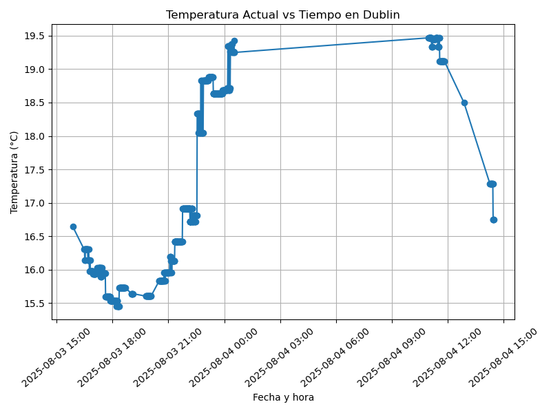
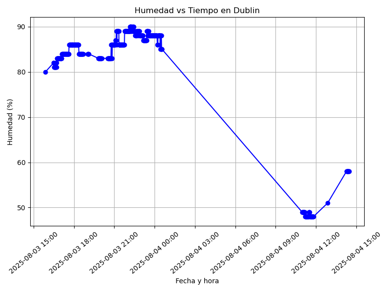

Clima en Dublín - Proyecto Final
Introducción
Este sitio presenta datos meteorológicos recolectados de la API de OpenWeatherMap para la ciudad de Dublín.
Datos Recientes
A continuación se muestran los datos más recientes obtenidos:
| timestamp | ciudad | pais | temperatura_actual | sensacion_termica | temperatura_minima | temperatura_maxima | presion | humedad | descripcion_clima | estado_clima | velocidad_viento | direccion_viento | nubosidad | visibilidad | latitud | longitud |
|---|---|---|---|---|---|---|---|---|---|---|---|---|---|---|---|---|
| 2025-08-04 14:47:00 | Dublin | IE | 16.29 | 15.44 | 15.88 | 16.6 | 1016 | 56 | algo de nubes | Clouds | 10.8 | 270 | 20 | 10000 | 53.344 | -6.2672 |
Tabla del CSV con Python
| timestamp | ciudad | pais | temperatura_actual | sensacion_termica | temperatura_minima | temperatura_maxima | presion | humedad | descripcion_clima | estado_clima | velocidad_viento | direccion_viento | nubosidad | visibilidad | latitud | longitud |
|---|---|---|---|---|---|---|---|---|---|---|---|---|---|---|---|---|
| 2025-08-04 14:43:02 | Dublin | IE | 16.29 | 15.44 | 15.88 | 16.6 | 1016 | 56 | algo de nubes | Clouds | 10.8 | 270 | 20 | 10000 | 53.344 | -6.2672 |
| 2025-08-04 14:44:00 | Dublin | IE | 16.29 | 15.44 | 15.88 | 16.6 | 1016 | 56 | algo de nubes | Clouds | 10.8 | 270 | 20 | 10000 | 53.344 | -6.2672 |
| 2025-08-04 14:45:00 | Dublin | IE | 16.29 | 15.44 | 15.88 | 16.6 | 1016 | 56 | algo de nubes | Clouds | 10.8 | 270 | 20 | 10000 | 53.344 | -6.2672 |
| 2025-08-04 14:46:00 | Dublin | IE | 16.29 | 15.44 | 15.88 | 16.6 | 1016 | 56 | algo de nubes | Clouds | 10.8 | 270 | 20 | 10000 | 53.344 | -6.2672 |
| 2025-08-04 14:47:00 | Dublin | IE | 16.29 | 15.44 | 15.88 | 16.6 | 1016 | 56 | algo de nubes | Clouds | 10.8 | 270 | 20 | 10000 | 53.344 | -6.2672 |
Gráfica de Temperatura
La siguiente gráfica muestra la evolución reciente de la temperatura actual en Dublín:
Grafica de Humedad con respecto al tiempo

Arbol de archivos y subdirectorios
.
├── estilos.css
├── images
│ ├── humedad.png
│ └── temperatura.png
├── index.org
├── index.org~
└── public
├── estilos.css
├── images
│ ├── humedad.png
│ └── temperatura.png
├── index.html
└── public
├── images
│ ├── humedad.png
│ └── temperatura.png
└── public
├── images
│ ├── humedad.png
│ └── temperatura.png
└── public
├── images
│ ├── humedad.png
│ └── temperatura.png
└── public
├── images
│ ├── humedad.png
│ └── temperatura.png
└── public
└── images
├── humedad.png
└── temperatura.png
14 directories, 19 files
Código Fuente
El siguiente código fue usado para extraer los datos del clima:
import requests import csv import json from datetime import datetime import os class WeatherDataExtractor: def __init__(self, api_key): # se inicia el extractor del API de OpenWeatherMap self.api_key = api_key self.base_url = "http://api.openweathermap.org/data/2.5/weather" def get_weather_data(self, city, country_code=None): # se obtienen los datos del clima de la ciudad try: # Construir la query para la ciudad if country_code: location = f"{city},{country_code}" else: location = city # Parámetros para la API params = { 'q': location, 'appid': self.api_key, 'units': 'metric', # Para obtener temperatura en Celsius 'lang': 'es' # Para descripciones en español } # se hace la petición a la API response = requests.get(self.base_url, params=params) response.raise_for_status() # Lanza excepción si hay error HTTP return response.json() except requests.exceptions.RequestException as e: print(f"Error al obtener datos para {city}: {e}") return None except json.JSONDecodeError as e: print(f"Error al decodificar JSON para {city}: {e}") return None def extract_relevant_data(self, weather_data): # se extraen lo datos mas relevantes if not weather_data: return None try: # Extraer datos principales main_data = weather_data.get('main', {}) weather_info = weather_data.get('weather', [{}])[0] wind_data = weather_data.get('wind', {}) clouds_data = weather_data.get('clouds', {}) sys_data = weather_data.get('sys', {}) # Crear diccionario con datos relevantes extracted_data = { 'timestamp': datetime.now().strftime('%Y-%m-%d %H:%M:%S'), 'ciudad': weather_data.get('name', ''), 'pais': sys_data.get('country', ''), 'temperatura_actual': main_data.get('temp', 0), 'sensacion_termica': main_data.get('feels_like', 0), 'temperatura_minima': main_data.get('temp_min', 0), 'temperatura_maxima': main_data.get('temp_max', 0), 'presion': main_data.get('pressure', 0), 'humedad': main_data.get('humidity', 0), 'descripcion_clima': weather_info.get('description', ''), 'estado_clima': weather_info.get('main', ''), 'velocidad_viento': wind_data.get('speed', 0), 'direccion_viento': wind_data.get('deg', 0), 'nubosidad': clouds_data.get('all', 0), 'visibilidad': weather_data.get('visibility', 0), 'latitud': weather_data.get('coord', {}).get('lat', 0), 'longitud': weather_data.get('coord', {}).get('lon', 0) } return extracted_data except Exception as e: print(f"Error al procesar datos: {e}") return None def save_to_csv(self, data_list, filename='weather_data.csv'): #guarda una lista de datos en un csv if not data_list: print("No hay datos para guardar") return try: # Obtener las columnas del primer elemento fieldnames = data_list[0].keys() # Verificar si el archivo ya existe file_exists = os.path.isfile(filename) # Abrir archivo en modo append si existe, write si no existe mode = 'a' if file_exists else 'w' with open(filename, mode, newline='', encoding='utf-8') as csvfile: writer = csv.DictWriter(csvfile, fieldnames=fieldnames) # Escribir header solo si es un archivo nuevo if not file_exists: writer.writeheader() # Escribir los datos writer.writerows(data_list) print(f"Datos guardados exitosamente en {filename}") except Exception as e: print(f"Error al guardar CSV: {e}") def get_dublin_weather(self): # se obtienen datos del clima de Dublín print("Obteniendo datos del clima de Dublín...") weather_data = self.get_weather_data('Dublin', 'IE') return self.extract_relevant_data(weather_data) if __name__ == "__main__": API_KEY = '162898c2cf4c7dee38295ecc67bc7ad8' extractor = WeatherDataExtractor(API_KEY) dublin_data = extractor.get_dublin_weather() if dublin_data: extractor.save_to_csv([dublin_data], 'dublin_weather.csv') print("¡Datos de Dublín guardados exitosamente!") print(f"\n--- Datos actuales de Dublín ---") print(f"Temperatura: {dublin_data['temperatura_actual']}°C") print(f"Sensación térmica: {dublin_data['sensacion_termica']}°C") print(f"Descripción: {dublin_data['descripcion_clima'].title()}") print(f"Humedad: {dublin_data['humedad']}%") print(f"Viento: {dublin_data['velocidad_viento']} m/s") print(f"Timestamp: {dublin_data['timestamp']}") else: print("Error: No se pudieron obtener los datos de Dublín") print("\nProceso completado!")
Acerca del Proyecto
Proyecto desarrollado para la asignatura de Arquitectura de Computadoras